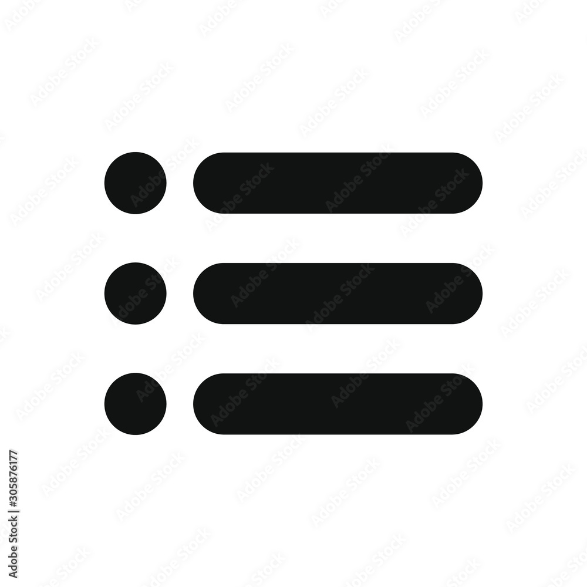

<mat-drawer-container class="example-container" autosize>
  <button mat-button class="logout" color="accent" (click)="logout()">logout</button>

  <mat-drawer #drawer class="example-sidenav" mode="side">

    <button mat-button color="accent" routerLink="/profile">profile</button>
  </mat-drawer>

  <div class="example-sidenav-content">
    <button type="button" mat-button (click)="drawer.toggle()">
      
    </button>
    <p>welcome to master page

    </p>
  </div>

</mat-drawer-container>
